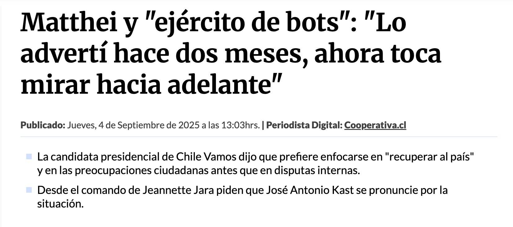
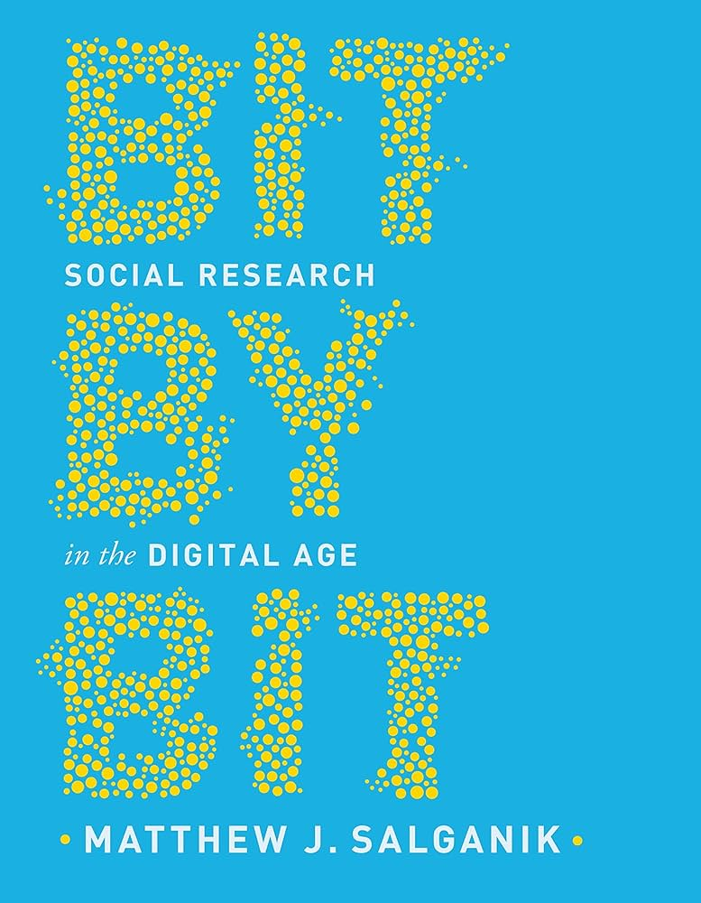
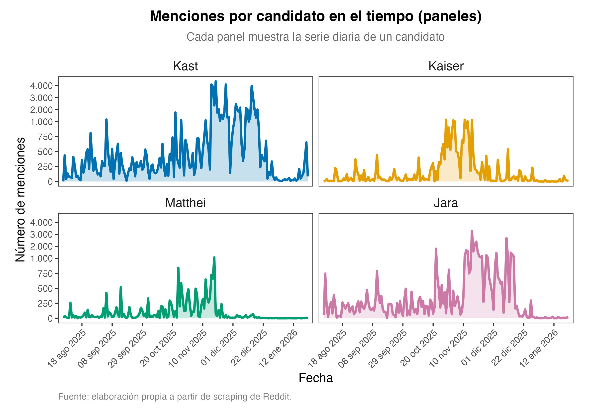
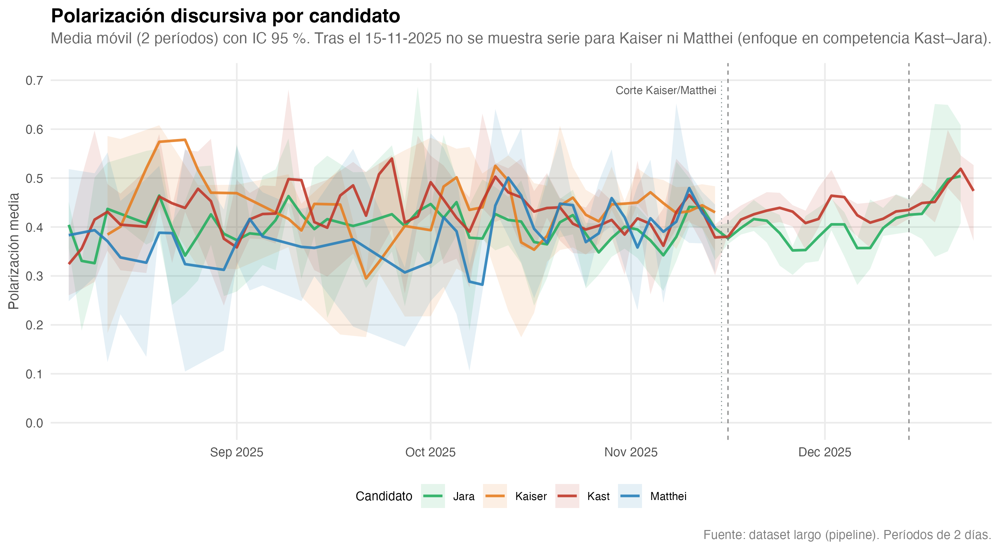
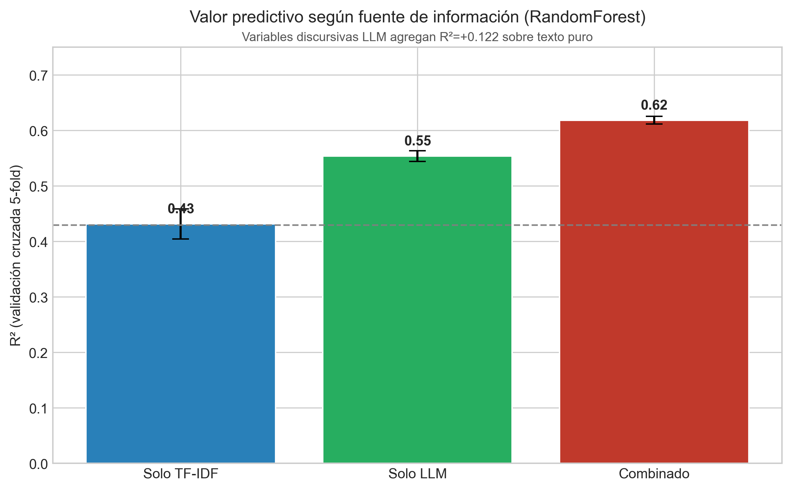
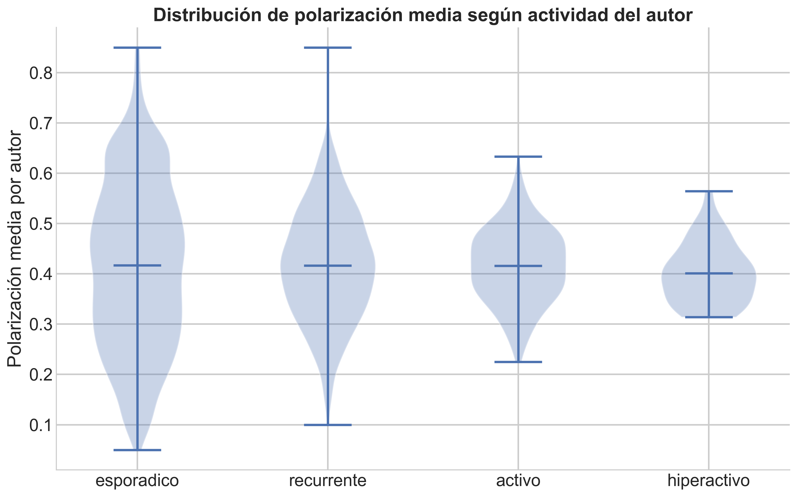

Derecha fragmentada y un enemigo compartido
Anotación LLM dual y polarización discursiva en Reddit durante las elecciones chilenas de 2025
2026-03-01
Índice
- Problema, motivación e innovación
- Apuesta teórica y metodológica
- Resultados
- Balances, limitaciones y proyecciones
Problema
Redes sociales y democracia
I
La frontera de las redes sociales: El ellos y el nosotros
II
Discursos de odio
III
Cámaras de eco y homofilia
IV
Colaboración entre grupos
Elecciones presidenciales en Chile: Nuestro laboratorio
Chile ofrece un escenario particularmente interesante: 3 candidatos de derecha versus candidata de la izquierda.
La hipótesis sostenida es que existían dos disputas simultáneas: una intra-derecha y otra entre los polos antagónicos (izquierda-derecha).

¿Por qué mi interés?
Ciencias sociales computacionales / Ciencia de Datos Sociales

“One day I found that approximately 100 participants from Brazil had completed my experiment overnight. This seemingly small discovery had a deep impact on me. Back then, my colleagues were conducting research the traditional way — spending enormous effort recruiting, managing, and compensating participants in physical lab settings, where getting through 10 participantes in a day was considered a real achievement. Yet my internet-based study had gathered 100 participants […] while I was sleeping.”
Matthew J. Salganik
Y aquí la innovación
MACI (para la innovación…)
- Reddit como fuente de datos no convencional para análisis político en Chile.
- Escalabilidad: análisis de corpus completo (>100k comentarios) sin muestreo.
- Innovación metodológica:
- Superación del enfoque léxico (diccionarios) mediante anotación dual LLM (GPT-4o + DeepSeek).
- Validación supervisada con ganancia incremental (ΔR²) sobre baseline TF-IDF.
- MVP concreto:
- Perfiles emocionales por candidatura (O1)
- Red de antagonismos con valencia (O2)
- Serie temporal por fase electoral (O3)
- Termómetro de innovación:
- Incremental: Aplicación de LLMs a corpus político chileno (caso nuevo, método conocido).
- Sustancial: Pipeline dual + validación cuantitativa de ganancia sobre métodos tradicionales.
El interés en particular nace cuando, dentro de mis labores en un proyecto, se me pidió un análisis de webscraping de diferentes medios chilenos sobre figuras de la derecha chilena. Llegado el momento de la presentación de resultados, la IP me indicó: “Bueno, envíame la nube de palabras”.
Marco referencial y objetivos
Teoría
Polarización afectiva
Distancia emocional entre grupos políticos, no necesariamente ideológica (Iyengar et al., 2019). Se mide por intensidad de emociones negativas hacia el outgroup y positivas hacia el ingroup.
Antagonismo/agonismo (Mouffe)
Construcción de fronteras políticas — el “ellos vs. nosotros”. El antagonismo convierte al adversario en enemigo existencial; el agonismo reconoce la legitimidad del contrincante.
Framing
Encuadres que definen problemas, causas y soluciones (Entman, 1993). Los marcos discursivos seleccionan ciertos aspectos de la realidad y los hacen salientes, guiando la interpretación política.
Emociones políticas
El odio, el miedo, el resentimiento y la admiración no son subproductos de la ideología — son organizadores del conflicto (Marcus et al., 2000). Las emociones negativas intensifican la polarización afectiva y movilizan identidades políticas.
¿Cómo se articula la polarización afectiva en la competencia
dentro de las derechas y entre el espectro derecha–izquierda?
Metodología
Procesamiento de lenguaje natural
Del léxico fijo al contexto dinámico
Baseline ML tradicional
TF-IDF (bag-of-words) + RandomForest
- Aprende desde coocurrencias léxicas
- Significado estable por palabra
- “Kast es un peligro” vs. “Kast enfrenta un peligro” → indistinguibles
Pipeline dual LLM
Anotación semántica + RandomForest
- LLMs (GPT-4o + DeepSeek) anotan contexto
- Capturan sintaxis y pragmática
- “es un peligro” → amenaza
“enfrenta un peligro” → neutral
Validación incremental (ΔR²)
Hipótesis: Si las variables LLM no mejoran sobre TF-IDF (ΔR² ≤ 0), solo recodifican coocurrencias léxicas — no agregan estructura semántica adicional.
Test: Comparar R² de tres modelos (TF-IDF solo, LLM solo, combinado) para medir ganancia incremental del pipeline dual.
Los actores del estudio
Tabla 2.1: Candidaturas analizadas y perfil electoral. Fuente: Pulso Ciudadano / Activa Research, 15-17 de octubre de 2024.
| Actor | Posición | Base social |
|---|---|---|
| Evelyn Matthei | Derecha tradicional | Mayoría femenina (60,4%), mayores de 50 años (54%), estratos medios-altos (C1-C2); alta proporción sin identificación política (40,1%). |
| José Antonio Kast | Derecha radical y conservadora | Transversal en términos de clase; fuerte presencia en regiones del sur (31,8%); electorado joven y mayor de 50; alta proporción sin identificación política (35,1%). |
| Johannes Kaiser | Derecha libertaria | Mayoría masculina (55,5%); concentrado en mayores de 50 años (50,2%) y estratos bajos (C3-D/E); presencia en sur y centro del país. |
| Jeannette Jara | Izquierda (PC) | Fuerte en Región Metropolitana (56,9%); estratos medios (C2-C3); electorado altamente ideologizado (62,6% se identifica como centroizquierda). |
Acceso y fuente de datos
- ¿Qué es Reddit?
- Subreddits:
r/chileyr/RepublicadeChile(principales espacios de discusión política chilena) - Corpus: >100k comentarios extraídos vía API pública de Reddit (Web scrapping)
- Ventana temporal: Agosto-diciembre 2025 (precampaña, primera vuelta, segunda vuelta)
- Filtro: Menciones explícitas a candidatos (regex/flags) para foco analítico
- Sin muestreo: Análisis del corpus completo (Solo filtro a menciones explícitas)
¿Qué clasificamos?
Polarización afectiva
Hostilidad discursiva (continua)
Estrategias de ataque
Amenaza, ridiculización, esencialización…
Marcos interpretativos
Moral, conflicto, economía, identidad…
Fronteras políticas
Inter-bloque vs. intra-bloque (derecha)
Clasificación dual GPT-4o (OpenAI) + DeepSeek, con reglas de consenso y desempate documentadas en la tesis.
Sobre el prompt anotación LLM dual
El sistema utiliza dos prompts secuenciales para clasificar cinco dimensiones discursivas en cada comentario:
Prompt A: Sentimiento y polarización
- Polarización afectiva del comentario en escala continua (0.0–1.0), donde 0.0 = neutral/informativo y 1.0 = amenaza/deshumanización.
- Reglas de target: Clasifica solo si el comentario evalúa directamente al candidato; crítica a votantes cuenta como negativo hacia el candidato; ironía evaluada por tono dominante.
Prompt B: Marco, emoción, estrategia y frontera
Clasifica cuatro dimensiones siguiendo marcos teóricos establecidos:
Marco interpretativo (Entman, 1993): diagnóstico, pronóstico, motivacional, conflicto, moral, económico, identitario, otro.
Emoción predominante: indignación, ira, desprecio, miedo, esperanza, alegría, ironía, ninguna. Distingue entre emociones cálidas (ira) vs. frías (desprecio), e ironía (crítica implícita) vs. alegría.
Estrategia adversarial: deslegitimación, ridiculización, atribución oculta, construcción de amenaza, esencialización, ninguna.
Frontera política: inter-bloque (derecha vs. izquierda), intra-bloque (entre candidatos de derecha), ninguna. Regla estricta: NUNCA inter-bloque si el hilo solo menciona candidatos de derecha.
Datos obtenidos
Depuración de datos
Del corpus bruto al corpus analítico
Embudo de exclusiones (misma lógica que el capítulo de depuración de la tesis; la fila final recorta además la ventana 1 ago – 31 dic 2025, America/Santiago).
| Etapa | N comentarios |
|---|---|
| Corpus bruto | 163.695 |
| Tras filtrar bots y eliminados | 144.216 |
| Tras filtrar comentarios cortos (menos de 3 tokens) | 136.707 |
| Corpus final analizable | 134.730 |
Distribución por candidato

Nota: Asimetría marcada en la distribución de menciones. Kast lidera con 102.759 comentarios (62.8% del corpus), seguido por Jara con 63.602 (38.9%), Kaiser con 26.521 (16.2%) y Matthei con 16.358 (10.0%). Los porcentajes suman más del 100% porque un mismo comentario puede referenciar a múltiples candidatos.
Resultados: 4 historias
Historia 1: Coincidencia de los modelos
¿Coinciden los dos modelos?
Valores del acuerdo OpenAI (GPT-4o) vs. DeepSeek
| Métrica | Valor | Lectura |
|---|---|---|
| Correlación r (GPT-DeepSeek) | 0.665 | Convergencia moderada-alta en la escala continua |
| κ (Humano-GPT) | 0.64 | Acuerdo moderado alto; validez aceptable |
| κ (Humano-DeepSeek) | 0.79 | Acuerdo alto; validez aceptable |
Nota: Validación humana sobre muestra aleatoria de 250 comentarios durante fase de calibración del pipeline.
Sí en polarización (r = 0,665): ambos modelos comparten señal en hostilidad discursiva.
Heterogéneo en categorías: las κ son bajas; en frontera el valor negativo no implica azar, sino que ambos marcan comentarios fronterizos pero discrepan de forma consistente sobre si el ataque es inter- o intra-bloque.
La convergencia en polarización valida el pipeline dual como robusto para la variable >central. Las divergencias en otras dimensiones no invalidan el diseño — documentan la complejidad del fenómeno discursivo estudiado.
Historia 2: La polarización
Distribución de polarización por candidato

Distribuciones unimodales, medianas entre 0,3 y 0,5. Kast y Jara con colas más pesadas hacia alta hostilidad.
Polarización en el tiempo

Sin tendencia ascendente clara hacia la elección: hostilidad de base relativamente estable en el periodo observado.
Historia 3: Inter-bloque vs. intra-bloque — dos lógicas de hostilidad
Estrategias por frontera política (ML clásico: test χ² de independencia)
Hipótesis: Las estrategias adversariales no se distribuyen uniformemente entre fronteras inter- e intra-bloque.
| Estrategia | Inter-bloque | Intra-bloque | χ² (gl=1) | V de Cramér |
|---|---|---|---|---|
| Deslegitimación | 66.3% | 10.1% | χ² = 1245.3 (p<0.001) | 0.38 |
| Ridiculización | 48.3% | 21.9% | χ² = 347.2 (p<0.001) | 0.20 |
| Construcción de amenaza | 66.0% | 11.1% | χ² = 1189.7 (p<0.001) | 0.37 |
| Esencialización | 65.2% | 12.8% | χ² = 1098.4 (p<0.001) | 0.36 |
Resultado: La deslegitimación domina el ataque inter-bloque (hacia la izquierda, 66.3%), mientras que la ridiculización es la estrategia preferida intra-bloque (entre derechas, 21.9%). El test χ² rechaza la hipótesis de independencia (p < 0.001 en todas las estrategias). La V de Cramér confirma asociación moderada-fuerte (V > 0.30) entre estrategia y dirección de frontera para deslegitimación, amenaza y esencialización — acoplamiento estructural, no distribución aleatoria.
Estrategias a lo largo del tiempo

Estructura adversarial estable: ajustes tácticos, no transformaciones del repertorio.
Historia 4: Polarización en el repertorio; el candidato, vía mediación
Valor añadido del LLM dual

- TF-IDF solo: R² ≈ 0,43
- Variables LLM solas: R² ≈ 0,55
Valor añadido del LLM dual
Validación incremental: TF-IDF como baseline
Ejemplo: Comentario “Kast es un peligro para Chile. Una copia barata de Trump”
TF-IDF detecta: palabras “Kast” (peso alto) + “peligro” (peso medio) → predice polarización moderada
Variables LLM detectan: emoción = miedo, estrategia = construcción de amenaza, marco = conflicto → predice polarización alta
Modelo A (solo TF-IDF): Predice polarización usando únicamente las palabras del comentario → R² = 0.432
Modelo B (solo variables LLM): Predice polarización usando emoción, estrategia, marco → R² = 0.554
Modelo C (TF-IDF + LLM): Combina palabras y variables discursivas → R² = 0.619
Interpretación: Las variables LLM superan TF-IDF (+0.122 en R²) — capturan estructura semántica adicional que las palabras no revelan. TF-IDF sabe qué se dice; las variables LLM saben cómo.
Clasificación de polarización alta

RandomForest AUC ≈ 0,856. Regresión logística AUC ≈ 0,811. La señal tiene una parte lineal, pero hay interacciones que solo modelos no paramétricos capturan bien.
¿Qué predice la polarización?

- Tipo de hilo: caída de R² ≈ 0,50 al permutar (orden de magnitud).
- Estrategia, n_words, emoción: caídas superiores a 0,40.
- Candidato (target): caída ≈ 0,04 — sin aporte marginal una vez fijados estrategia, emoción, marco, frontera, tipo de hilo y largo del texto (OLS coherente: \(\beta \approx 0\), \(p = 0.818\)).
“Una vez controlado por estrategia y emoción, el candidato target deja de aportar información predictiva. La hostilidad reside en el repertorio, no en el destinatario.”
¿Quiénes son los polarizados?

Síntesis y limitaciones
Tres hallazgos centrales
1. Validación incremental del pipeline dual LLM
Las variables LLM (emoción, estrategia, marco, frontera) superan el baseline TF-IDF por ΔR² = +0.187 (modelo combinado alcanza R² = 0.619 vs. 0.432 del bag-of-words). Las variables discursivas capturan estructura semántica que el léxico puro no recupera — TF-IDF sabe qué se dice; LLM sabe cómo.
2. Frontera política computacionalmente recuperable
F1-macro = 0.725 para clasificar inter/intra-bloque. La frontera política (derecha vs. izquierda, intra-derecha) deja huella textual detectable en corpus informal.
3. Hostilidad en el repertorio, mediación vía candidato
Candidato como target no predice polarización directamente (β ≈ 0, p > 0.05), pero condiciona el repertorio aplicado. Kast/Jara movilizan estrategias de mayor intensidad que Matthei/Kaiser. La polarización no se explica por quién es atacado, sino por cómo — pero ese “cómo” depende del candidato.
Limitaciones
- Reddit no es representativo del electorado chileno — élite activista digital, sesgada demográficamente.
- Atribución ideológica inferida (comportamiento en plataforma), no autodeclarada — introduce ruido de medición.
- Diseño longitudinal sin causalidad fuerte — documenta correlaciones robustas, no identifica mecanismos causales.
- Validación humana limitada — 250 comentarios en fase de calibración (κ ≈ 0.50); corpus completo sin validación exhaustiva.
- Kappas bajos en emoción (0.076) y marco (0.136) — ambigüedad conceptual legítima; dimensiones usadas para tendencias agregadas, no clasificación individual.
Líneas futuras
Ventanas de evento más finas — análisis diario/horario alrededor de debates, declaraciones, scandals.
Extensión a desinformación — detección de bots, coordinación inorgánica, contenido falso.
Modelado causal quasi-experimental — diferencias-en-diferencias, regresión discontinua aprovechando eventos naturales.
Seguirlo en mi eventual doctorado — Mi propuesta de investigación versa sobre la difusión y adopción de ideas que tensionan la deliberación democrática
Derecha fragmentada y
un enemigo compartido
Anotación LLM dual y polarización discursiva
en Reddit durante las elecciones chilenas de
2025
Matías Javier Deneken
Tesis Magíster en Ciencia de Datos para la innovación
Profesores guías: Dr. Carlos Navarrete · Dra. Marcela Parada